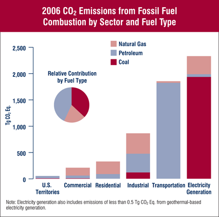

HERO—About Greenhouse Gas Emissions
Greenhouse gases (GHGs) are gases that trap heat in the atmosphere by absorbing and emitting thermal radiation from the sun.
These include carbon dioxide (CO2), methane (CH4), nitrous oxide (N2O), and fluorinated gases. Some greenhouse gases, such as CO2, are emitted to the atmosphere through both natural processes and human activities. Other greenhouse gases (e.g., fluorinated gases) are created and emitted solely through human activities.
CO2

Carbon dioxide enters the atmosphere through the burning of fossil fuels (oil, natural gas, and coal), solid waste, trees and wood products, etc. Carbon dioxide is also removed from the atmosphere (or “sequestered”) when it is absorbed by plants as part of the biological carbon cycle.

CO2 equivalents are calculated based on the Global Warming Potential (GWP) (http://en.wikipedia.org/wiki/Global-warming_potential) of different gases. Global-warming potential (GWP) is a relative measure of how much heat a greenhouse gas traps in the atmosphere compared to how much heat is trapped by CO2.
The GWP depends on the absorption of infrared radiation by a given species, the frequency of light wavelengths that are absorbed, and the atmospheric lifetime of the species. For example, the GWP of methane for the 20-year time horizon is 72, which means that over the course of 20 years a kg of methane will trap 72 times more heat in the atmosphere than a kg of CO2.
In HERO's case, CO2 equivalents reported represent the emissions from three main GHGs: CO2, methane (CH4), and N2O. The mass of emissions is multiplied by the 20-year GWP for each gas.
Worldwide, emissions of greenhouse gases from human activities increased by 26 percent from 1990 to 2005. Emissions of carbon dioxide, which account for nearly three-fourths of the total, increased by 31 percent over this period.
CH4
Methane is emitted during the production and transport of coal, natural gas, and oil. Methane emissions also result from livestock and other agricultural practices and by the decay of organic waste in municipal solid waste landfills.
What can I do to lower emissions of greenhouse gases?
To reduce GHG emissions, use HERO to find out when emissions from electric power generation are high or low.
HERO uses real-time market pricing of electricity to estimate the marginal fuel type that is being used to produce electricity at any given time. This could be nuclear or renewable, coal, natural gas, or fuel oil. Each fuel type results in a different set emission rates for all pollutants. Learn more about marginal fuel type in HERO's About section.
HERO was made to help you lower the emissions from your electricity use. You can take note of when emissions are typically high or low, and use these patterns to reduce your emissions by changing the timing of your electric load. You can set timers for certain appliances or battery chargers so that these electric loads occur when emissions are low.
Related Links:
* EPA: Greenhouse Gas Emissions
* EPA: CO2
* EPA: Methane
* Global Warming Potential Calculation
* EPA: Climate Change Indicators in the USA
* Greenhouse Effect Picture
* Sources of CO2 Graphs
* Sources of Methane Picture
* Sources of SOx Picture
* Sources of N2O Picture
HERO—About NOX Emissions

NOX emissions come from fossil fuel combustion by power plants, vehicles, factories, and other sources.
Emissions of nitrogen oxides (NOX) and sulfur oxides (SOX) are the primary causes of acid rain and smog.
Acid Rain
Acidity US Map
Sulfur dioxide (SO2) and nitrogen oxides (NOX) are the precursors for acid precipitation. Acid rain is a broad term referring to wet and dry deposition from the atmosphere containing high amounts of nitric and sulfuric acids.
* Acidification of lakes and streams:
Surface waters (lakes and streams) and aquatic animals.
* Damage to forests:
Acid Rain effect on Forests.
* Accelerated decay of building materials and paints,
including historic buildings and statues that are national
monuments:
Automotive coatings, Materials.
For more information, visit:
http://www.epa.gov/acidrain/effects/

Smog
NOX and SOX are the main causes of smog. The main component of smog, ozone (O3), is formed by a photochemical reaction of sunlight, NOX, and volatile organic compounds (VOCs).
Miles above the earth, ozone shields us from ultraviolet radiation, but at ground-level, ozone causes respiratory problems. Nitrates and sulfates also contribute to the formation of particulate matter (PM), another ingredient of smog."
Effects of Smog
* Visibility degradation:
Reduces how far we can see through the air.
* Harm to public health:
SO2, NOX and ground-level ozone can have numerous
effects on human health, including hospitalization
for heart or lung disease and increased morbidity
and mortality risks associated with lung inflammation
including asthma, bronchitis, and emphysema.
Sources of NOx
NOX emissions come from fossil fuel combustion by power plants, vehicles, factories, and other sources.
Nitrous oxide is emitted during agricultural and industrial activities, as well as during combustion of fossil fuels and solid waste.
* Nitrogen oxides form when fuel is burned at high temperatures.
* The primary sources of NOX are motor vehicles, electric utilities, and other industrial,
commercial, and residential sources that burn fuels.
* About 1/4 of all NOX come from electric power generation that relies on burning fossil fuels, like coal.
What can I do to lower emissions of NOX?
To reduce acid rain, smog, and ground-level ozone, you can use HERO to find out when emissions from electric power generation are high or low.
HERO uses real-time market pricing of electricity to estimate the marginal fuel type that is being used to produce electricity at any given time. This could be nuclear or renewable, coal, natural gas, or fuel oil. Each fuel type results in a different set emission rates for all pollutants. Learn more about marginal fuel type in HERO's About section.
HERO was made to help you lower the emissions from your electricity use. You can take note of when emissions are typically high or low, and use these patterns to reduce your emissions by changing the timing of your electric load. You can set timers for certain appliances or battery chargers so that these electric loads occur when emissions are low.
v
Since NOX primarily comes from vehicle emissions, reducing unnecessary trips in the car and using public transportation, biking, and walking when possible are great ways to reduce your NOX emissions.
Luckily, since the Acid Rain Program was established under the 1990 Clean Air Act by the EPA, emissions from NOX have dropped.
Related Links:
* Effects of Acid Rain:
* Ozone Health Effects
* EPA – Nitrogen Dioxide
* Smokestack Picture
* Acid Rain Picture
* Acid Rain Branches Picture
* Smog in Los Angeles Picture
* Smog Health Effects Picture
* Sources of NOX Picture
* Acidity US Map Picture
* Smog in NYC Picture
* NOX Emission Trends Picture
HERO—About SOX Emissions
Emissions of nitrogen oxides (NOx) and sulfur oxides (SOx) are the primary causes of acid rain and smog.
Sulfur dioxide (SO2) and nitrogen oxides (NOx) are the precursors for acid precipitation. Acid rain is a broad term referring to wet and dry deposition from the atmosphere containing high amounts of nitric and sulfuric acids.
NOX and SOX are the main causes of smog. The main
component of smog, ozone (O3), is formed by a
photochemical reaction of sunlight, NOX, and volatile
organic compounds (VOCs).
Miles above the earth, ozone shields us from ultraviolet
radiation, but at ground-level, ozone causes respiratory
problems. Nitrates and sulfates also contribute to the
formation of particulate matter (PM), another ingredient
of smog.
Sources of SOx
SOx emissions come from fossil fuel combustion by power plants, vehicles, factories, and other sources.
In the United States, roughly 2/3 of all SO2 comes from electric power generation, especially by coal. Other sources include oil refineries, metal processing plants, and large non-road diesel burning equipment.
What can I do to lower emissions of SOx?
To reduce acid rain, smog, and ground-level ozone, you can use HERO to find out when emissions from electric power generation are high or low.
HERO uses real-time market pricing of electricity to estimate the marginal fuel type that is being used to produce electricity at any given time. This could be nuclear or renewable, coal, natural gas, or fuel oil. Each fuel type results in a different set emission rates for all pollutants. Learn more about marginal fuel type in HERO's About section.
HERO was made to help you lower the emissions from your electricity use. You can take note of when emissions are typically high or low, and use these patterns to reduce your emissions by changing the timing of your electric load. You can set timers for certain appliances or battery chargers so that these electric loads occur when emissions are low.
Luckily, since the Acid Rain Program was established under the 1990 Clean Air Act by the EPA, emissions from SOx have dropped.
Related Links:
* Effects of Acid Rain
* Ozone Health Effects
* EPA – Sulfur Dioxide
* Smokestack Picture
* Acid Rain Picture
* Acid Rain Branches Picture
* Smog in Los Angeles Picture
* Smog Health Effects Picture
* Sources of SOx Picture
* Acidity US Map Picture
* Smog in NYC Picture
* SOx Emission Trends Picture
HERO—Introduction to Mercury Emissions
Mercury is an element naturally occurring in the earth's crust. It is found in many rocks, including coal. Burning of coal releases mercury into the atmosphere, where it can travel great distances and then eventually is deposited onto land or water. From this point, mercury can undergo different transformations such as methylation by bacteria and other natural processes.
Mercury (Hg) is a well known environmental toxin. It causes neurological and digestive health problems in the animals and humans that are exposed to it. Even very low concentrations of mercury in water pose a health risk, because mercury undergoes bioaccumulation. A substance that bioaccumulates is taken in by an organism faster than it can be eliminated. Bioaccumulation causes animals that are on top of the food chain to have higher levels of mercury accumulate in their bodies.
Health effects of mercury
Three forms of mercury in the environment cause different
health effects: methylmercury, elemental mercury, and other
organic and inorganic mercury compounds. Methylmercury is the
most toxic and has the most potential for bioaccumulation,
thus people are exposed to methylmercury almost entirely by
eating contaminated fish and wildlife that are at the top of
aquatic food chains.
Methylmercury is particularly harmful to brain and nerve
development of fetuses, infants, and children. Elemental
mercury can be inhaled into the lungs and causes neurological
and neuromuscular symptoms like shaking, twitching, headaches,
mood swings, and so on. Mercury compounds inhibit over 50
enzymes in the body and have severe corrosive effects on the
internal digestive system, causing a wide range of symptoms.
Sources of Mercury
Trace amounts of mercury exist in coal and other fossil fuels. When these fuels burn, mercury vapor can be released to the atmosphere where it may drift for a year or more, spreading with air currents over vast regions of the globe.
In the Great Lakes Region, the largest source of mercury is air pollution from coal electric utility boilers. Other sources of mercury include: fuels burned for electricity production and in automobiles, municipal waste, cement manufacturing, steel and other metal processing.
What can I do to lower emissions of mercury?
To reduce mercury pollution, use HERO to find out when emissions from electric power generation are high or low.
HERO uses real-time market pricing of electricity to estimate the marginal fuel type that is being used to produce electricity at any given time. This could be nuclear or renewable, coal, natural gas, or fuel oil. Each fuel type results in a different set emission rates for all pollutants. Learn more about marginal fuel type in HERO's About section.
HERO was made to help you lower the emissions from your electricity use. You can take note of when emissions are typically high or low, and use these patterns to reduce your emissions by changing the timing of your electric load. You can set timers for certain appliances or battery chargers so that these electric loads occur when emissions are low.
The US EPA recently (December 2011) announced a new rule limiting the amount of mercury emissions from power plants for the first time.
Related Links:
* MDEQ Atmospheric Mercury Sources in the Great Lakes States
* CNN: EPA requires limit on mercury emissions from power plants
* USGS Mercury in the Environment
* USGS Mercury Contamination of Aquatic Ecosystems
* EPA Mercury Basic Information
* EPA Mercury Health effects
* Great Lakes Commission
* US DOE Mercury Emission Control RD
* UC Davis Study of Elemental Toxicity
HERO—Introduction to Lead Emissions
Lead is an element naturally occurring in small amounts in rocks and soil (including coal). Most lead emissions in the past came from leaded gasoline in automobiles. In the US, leaded fuel began to be phased out in 1973 and was completely banned for on-road fuel in 1996. Today, industrial processes, primarily metals processing, account for a large portion of lead emissions to the atmosphere.
Exposure to lead
Lead is an element naturally occurring in small amounts in rocks and soil (including coal). Most lead emissions in the past came from leaded gasoline in automobiles. In the US, leaded fuel began to be phased out in 1973 and was completely banned for on-road fuel in 1996. Today, industrial processes, primarily metals processing, account for a large portion of lead emissions to the atmosphere.
People can get lead in their body if they:
* Put their hands or other objects covered with lead dust
in their mouths.
* Eat paint chips or soil that contains lead.
* Breathe in lead dust, especially during renovations that
disturb painted surfaces.
* Lead is more dangerous to babies and young children
because they often put their hands and other objects that
could have lead dust on them in their mouths.
Health effects of lead
Lead Health Effects - X ray demonstrating the characteristic finding of lead poisoning, dense metaphyseal lines.
Childhood lead poisoning remains a major environmental health problem in the United States.
* Lead is more dangerous to children because:
o Children's growing bodies absorb more lead.
o Children's brains and nervous systems are more sensitive to the damaging effects of lead.
* If not detected early, children with high levels of lead in their bodies can suffer from:
o Damage to the brain and nervous system
o Behavior and learning problems, such as hyperactivity
o Slowed growth
o Hearing problems
o Headaches
* Lead is also harmful to adults. Adults can suffer from:
o Reproductive problems (in both men and women)
o High blood pressure and hypertension
o Nerve disorders
o Memory and concentration problems
o Muscle and joint pain
more information: http://www2.epa.gov/lead#health
Sources of Lead
In the past, motor vehicles were the biggest source of lead emissions. The good news is that between 1970 and 2005, estimated nationwide lead emissions decreased by 99 percent, mostly due to elimination of leaded gasoline. Leaded gas for on-road vehicles was completely phased out in 1996.
Today, lead pollution from lead smelters, metal processing plants and incinerators are the biggest sources of atmospheric lead. Other ways lead can enter the environment are through mining practices, steel industry, crop enhancers, improperly disposed of batteries. Lead from coal represents about 1 to 1.5% of total US emissions.
What can I do to lower emissions of lead?

To reduce lead pollution, use HERO to find out when emissions from electric power generation are high or low.
HERO uses real-time market pricing of electricity to estimate the marginal fuel type that is being used to produce electricity at any given time. This could be nuclear or renewable, coal, natural gas, or fuel oil. Each fuel type results in a different set emission rates for all pollutants. Learn more about marginal fuel type in HERO's About section.
HERO was made to help you lower the emissions from your electricity use. You can take note of when emissions are typically high or low, and use these patterns to reduce your emissions by changing the timing of your electric load. You can set timers for certain appliances or battery chargers so that these electric loads occur when emissions are low.
Related Links:
* Michigan DEQ How Does Lead Affect Our Environment?
* EPA Health Effects of Lead
* Clean Air Trust
* Lead Pollution and The Environment
* Emissions from Waste-to-Energy: A Comparison with Coal-fired Power Plants
* EPA Report on the Environment Lead Emissions
* Discovery: Lead
* U of Minnesota Extention Sources of Lead in the Environment
* Lead Health Effects